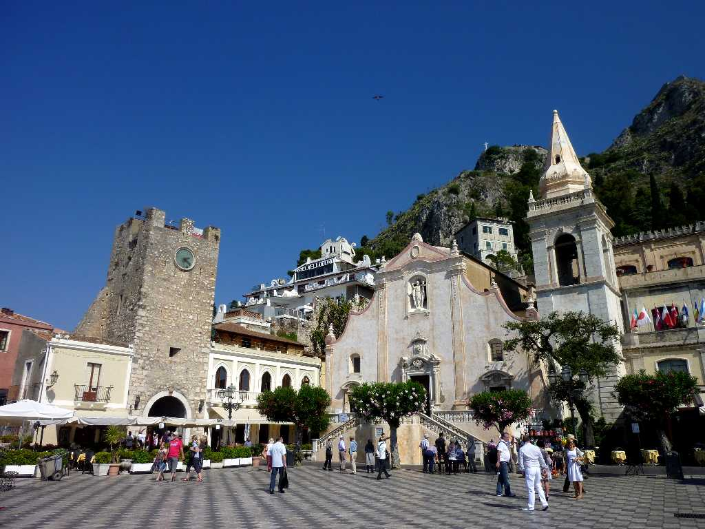
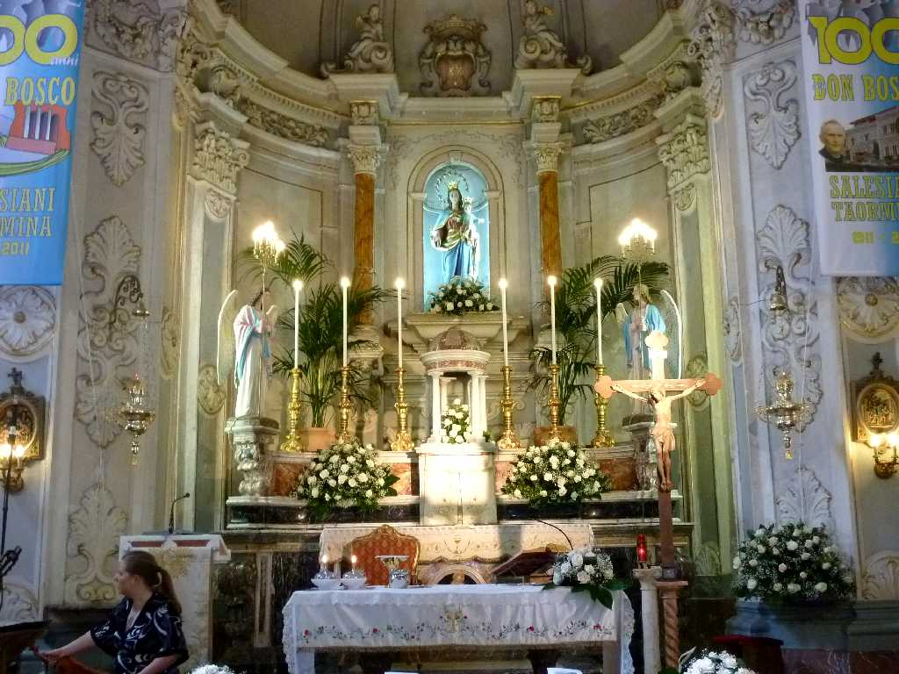
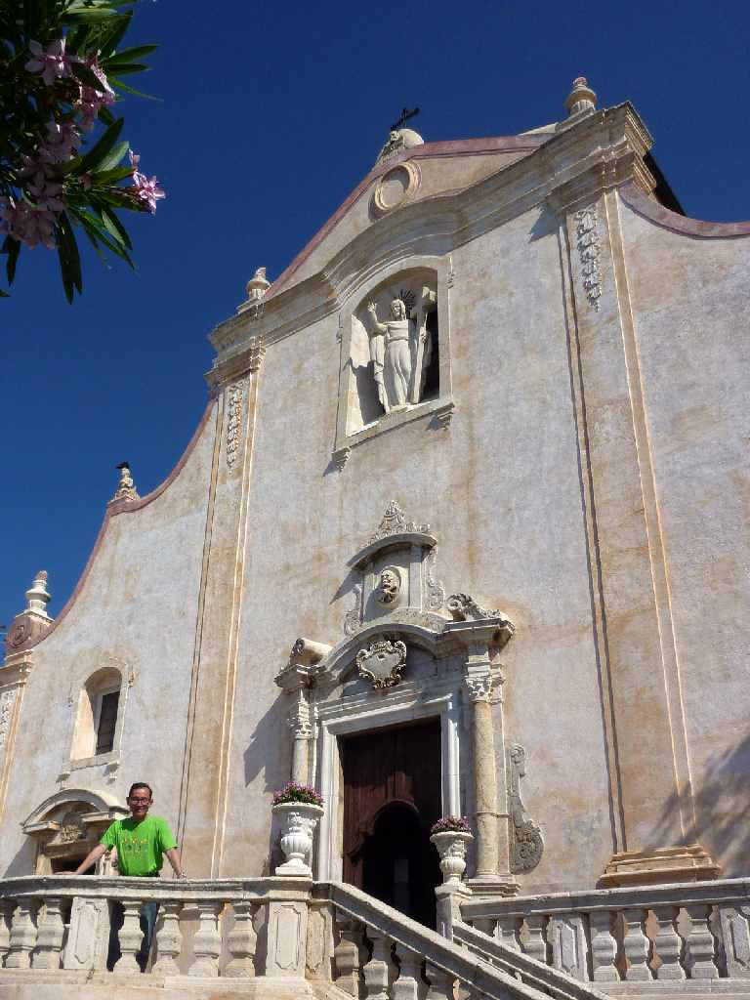
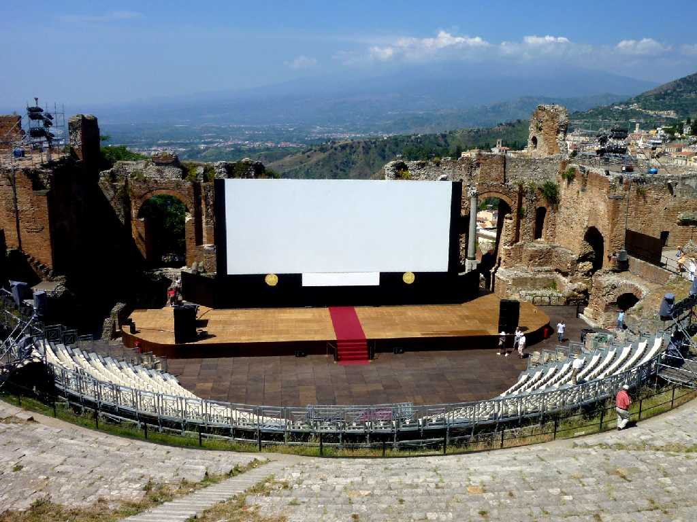
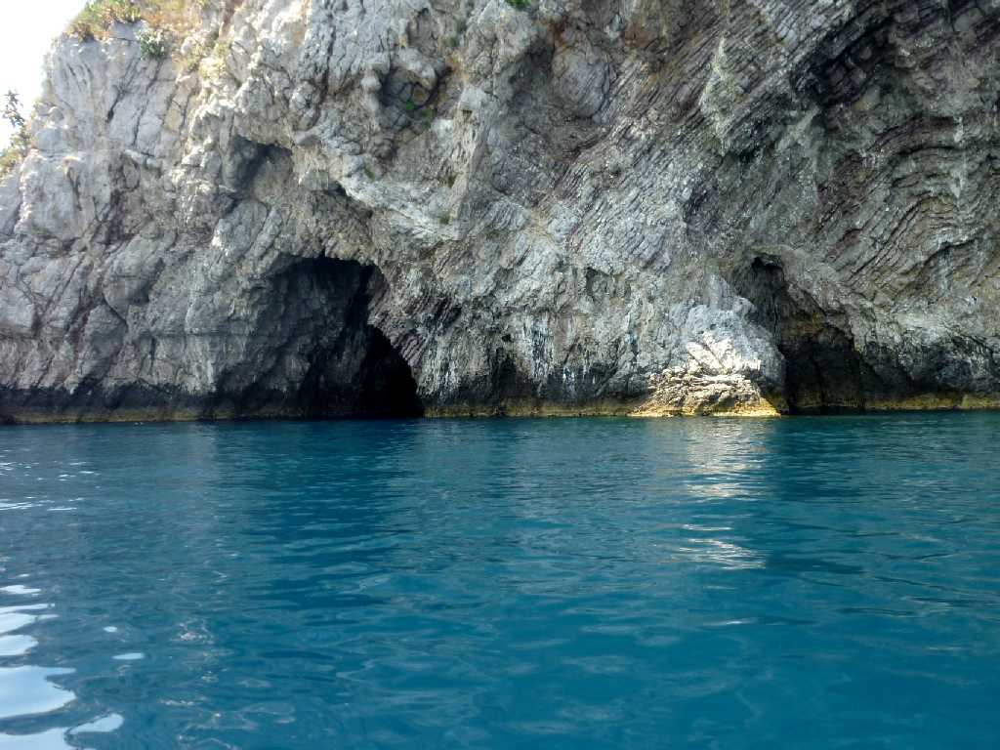
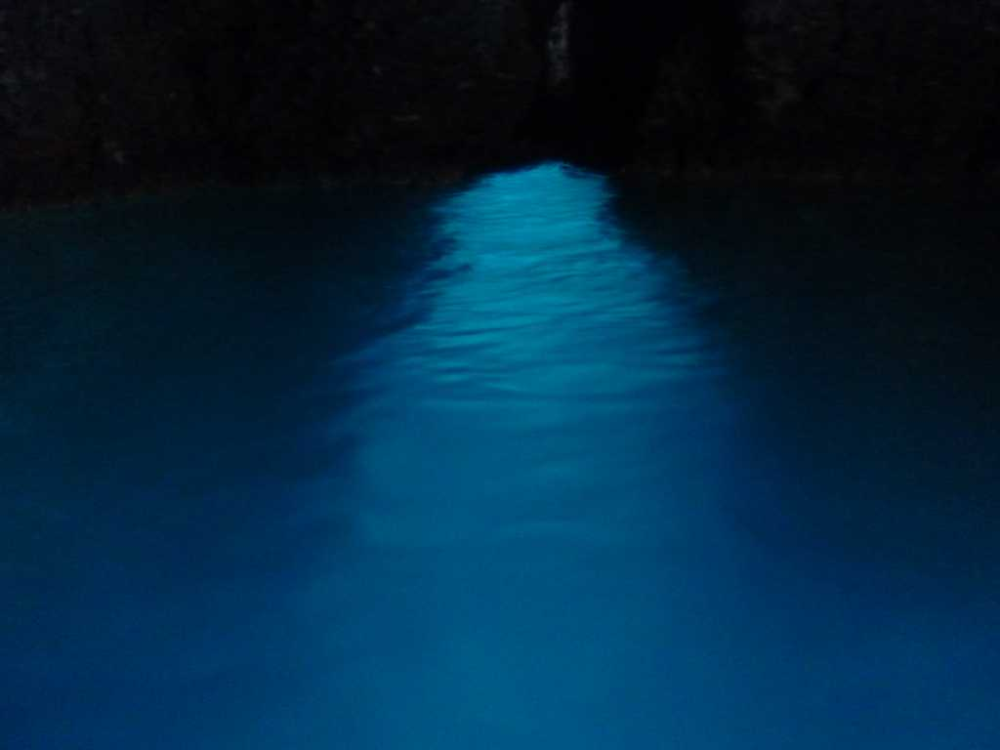
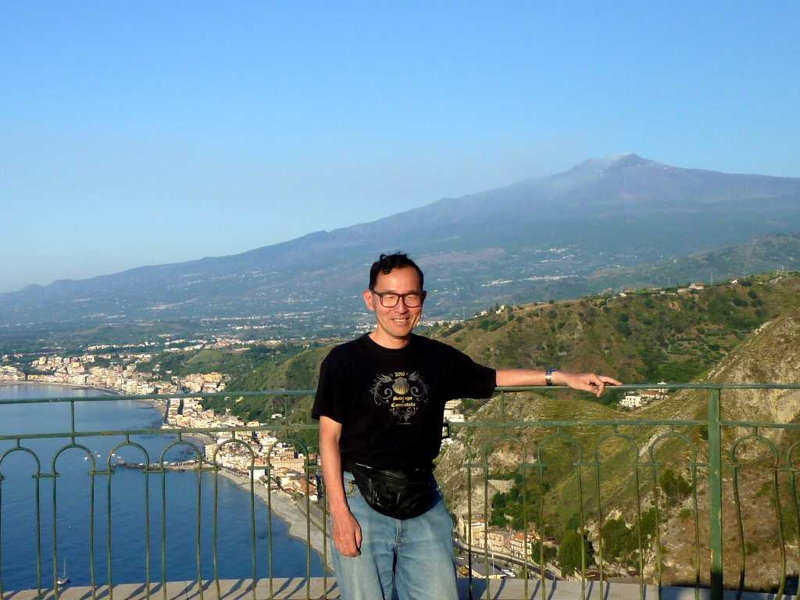

Piazza 9 April Taormina
高級リゾート地として賑う タオルミーナの中心街４月９日広場

Chiesa di San Giuseppe Taormina
１６世紀に創られたバロック様式のサンジュゼッペ教会

June 18 2011 Chiesa di San Giuseppe Taormina

Teatre Greco Romano Taormina
収容人員５千人を誇るギリシャ劇場とエトナ火山 イタリア統一１５０周年記念の催物場として利用されている

Grotta Azzurra Taormina
タオルミーナの青の洞窟

June 19 2011 Giardini Naxos & Mt, Etna Volcano from Taormina
タオルミーナより古い漁師町ジャルディーニナクソスとエトナ火山を望む